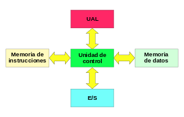
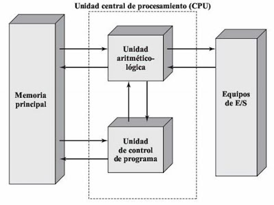

4.1 Aspectos básicos de la computación paralela.
Computador paralelo: Conjunto de elementos de procesos independientes que operan de una forma conjunta para resolver problemas de elevado coste computacional.
Ámbito de aplicación:
Desde la conexión de procesadores.
Hasta la conexión de computadores.
La computación paralela es una forma de cómputo en la que muchas instrucciones se ejecutan simultáneamente, operando sobre el principio de que problemas grandes,
a menudo se pueden dividir en unos más pequeños, que luego son resueltos simultáneamente (en paralelo).
Hay varias formas diferentes de computación paralela: paralelismo a nivel de bit, paralelismo a nivel de instrucción, paralelismo de datos y paralelismo de tareas.
El paralelismo se ha empleado durante muchos años, sobre todo en la computación de altas prestaciones, pero el interés en ella ha crecido últimamente debido a las
limitaciones físicas que impiden el aumento de la frecuencia. Como el consumo de energía —y por consiguiente la generación de calor— de las computadoras constituye
una preocupación en los últimos años, la computación en paralelo se ha convertido en el paradigma dominante en la arquitectura de computadores, principalmente en forma de procesadores multinúcleo.
Las computadoras paralelas pueden clasificarse según el nivel de paralelismo que admite su hardware: equipos con procesadores multinúcleo y multi-procesador que tienen múltiples
elementos de procesamiento dentro de una sola máquina y los clústeres, MPPS y grids que utilizan varios equipos para trabajar en la misma tarea. Muchas veces, para acelerar la tareas específicas,
se utilizan arquitecturas especializadas de computación en paralelo junto a procesadores tradicionales.
Los programas informáticos paralelos son más difíciles de escribir que los secuenciales, porque la concurrencia introduce nuevos tipos de errores de software,
siendo las condiciones de carrera los más comunes. La comunicación y sincronización entre diferentes subtareas son algunos de los mayores obstáculos para obtener un buen rendimiento del programa paralelo.
La máxima aceleración posible de un programa como resultado de la paralelización se conoce como la ley de Amdahl.
4.2 Tipos de computación paralela.
Paralelismo a nivel de bit:
Desde el advenimiento de la integración a gran escala (VLSI) como tecnología de fabricación de chips de computadora en la década de 1970 hasta alrededor de 1986, la aceleración en la arquitectura de computadores
se lograba en gran medida duplicando el tamaño de la palabra en la computadora, la cantidad de información que el procesador puede manejar por ciclo.
El aumento del tamaño de la palabra reduce el número de instrucciones que el procesador debe ejecutar para realizar una operación en variables cuyos tamaños son mayores que la longitud de la palabra.
Por ejemplo, cuando un procesador de 8 bits debe sumar dos enteros de 16 bits, el procesador primero debe adicionar los 8 bits de orden inferior de cada número entero con la instrucción de adición,
a continuación, añadir los 8 bits de orden superior utilizando la instrucción de adición con acarreo que tiene en cuenta el bit de acarreo de la adición de orden inferior, en este caso un procesador
de 8 bits requiere dos instrucciones para completar una sola operación, en donde un procesador de 16 bits necesita una sola instrucción para poder completarla.
Históricamente, los microprocesadores de 4 bits fueron sustituidos por unos de 8 bits, luego de 16 bits y 32 bits, esta tendencia general llegó a su fin con la introducción de procesadores de 64 bits,
lo que ha sido un estándar en la computación de propósito general durante la última década.
Paralelismo a nivel de instrucción:
Un programa de ordenador es, en esencia, una secuencia de instrucciones ejecutadas por un procesador. Estas instrucciones pueden reordenarse y combinarse en grupos que luego son ejecutadas en paralelo
sin cambiar el resultado del programa. Esto se conoce como paralelismo a nivel de instrucción. Los avances en el paralelismo a nivel de instrucción dominaron la arquitectura de computadores desde mediados
de 1980 hasta mediados de la década de 1990.
Los procesadores modernos tienen ''pipeline'' de instrucciones de varias etapas. Cada etapa en el pipeline corresponde a una acción diferente que el procesador realiza en la instrucción correspondiente a la etapa;
un procesador con un pipelinede N etapas puede tener hasta n instrucciones diferentes en diferentes etapas de finalización. El ejemplo canónico de un procesador segmentado es un procesador RISC,
con cinco etapas: pedir instrucción, decodificar, ejecutar, acceso a la memoria y escritura. El procesador Pentium 4 tenía un pipeline de 35 etapas.
Además del paralelismo a nivel de instrucción del pipelining, algunos procesadores pueden ejecutar más de una instrucción a la vez. Estos son conocidos como procesadores superescalares. Las instrucciones
pueden agruparse juntas sólo si no hay dependencia de datos entre ellas. El scoreboarding y el algoritmo de Tomasulo —que es similar a scoreboarding pero hace uso del renombre de registros— son dos de las
técnicas más comunes para implementar la ejecución fuera de orden y la paralelización a nivel de instrucción.
Un pipeline canónico de cinco etapas en una máquina RISC (IF = Pedido de Instrucción, ID = Decodificación de instrucción, EX = Ejecutar, MEM = Acceso a la memoria, WB = Escritura).
Paralelismo de datos:
El paralelismo de datos es el paralelismo inherente en programas con ciclos, que se centra en la distribución de los datos entre los diferentes nodos computacionales que deben tratarse en paralelo.
La paralelización de ciclos conduce a menudo a secuencias similares de operaciones —no necesariamente idénticas— o funciones que se realizan en los elementos de una gran estructura de datos.
Muchas de las aplicaciones científicas y de ingeniería muestran paralelismo de datos.
Una dependencia de terminación de ciclo es la dependencia de una iteración de un ciclo en la salida de una o más iteraciones anteriores. Las dependencias de terminación de ciclo evitan la paralelización de ciclos.
Un procesador superescalar con pipeline de cinco etapas, capaz de ejecutar dos instrucciones por ciclo. Puede tener dos instrucciones en cada etapa del pipeline, para un total de hasta 10 instrucciones
(se muestra en verde) ejecutadas simultáneamente.
Paralelismo de tareas:
El paralelismo de tareas es la característica de un programa paralelo en la que cálculos completamente diferentes se pueden realizar en cualquier conjunto igual o diferente de datos.
Esto contrasta con el paralelismo de datos,
donde se realiza el mismo cálculo en distintos o mismos grupos de datos. El paralelismo de tareas por lo general no escala con el tamaño de un problema.
4.2.1 Taxonomía de las arquitecturas paralelas.
La clasificación de Flynn ha demostrado funcionar bastante bien para la tipificación de sistemas, y se ha venido usando desde décadas por la mayoría de los arquitectos de computadores.
Sin embargo, los avances en tecnología y diferentes topologías, han llevado a sistemas que no son tan fáciles de clasificar dentro de los 4 tipos de Flynn. Por ejemplo, los procesadores vectoriales
no encajan adecuadamente en esta clasificación, ni tampoco las arquitecturas hibridas. Para solucionar esto se han propuesto otras clasificaciones, donde los tipos SIMD y MIMD de Flynn se suelen conservar,
pero que sin duda no han tenido el éxito de la de Flynn.

La figura 4.2 muestra una taxonomía ampliada que incluye alguno de los avances en arquitecturas de computadores en los últimos años.
No obstante, tampoco pretende ser una caracterización completa de todas las arquitecturas paralelas existentes.
4.2.2 Arquitectura de los computadores secuenciales.
4.2.2.1 Taxonomía de Flynn.
Probablemente la clasificación más popular de computadores sea la clasificación de Flynn. Esta taxónoma de las arquitecturas está basada en la clasificación atendiendo al flujo de datos e instrucciones en un sistema.
Un flujo de instrucciones es el conjunto de instrucciones secuenciales que son ejecutadas por un único procesador, y un flujo de datos es el flujo secuencial de datos requeridos por el flujo de instrucciones.
Con estas consideraciones, Flynn clasifica los sistemas en cuatro categorías:
SISD (Single Instruction stream, Single Data stream) Flujo único de instrucciones y flujo único de datos. Este el concepto de arquitectura serie de Von Neumann donde, en cualquier momento, sólo se está ejecutando
una única instrucción. A menudo a los SISD se les conoce como computadores serie escalares. Todas las maquinas SISD poseen un registro simple que se llama contador de programa que asegura la ejecución en serie del
programa. Conforme se van leyendo las instrucciones de la memoria, el contador de programa se actualiza para que apunte a la siguiente instrucción a procesar en serie. Prácticamente ningún computador puramente SISD
se fabrica hoy en día ya que la mayoría de procesadores modernos incorporan algún grado de paralelizacion como es la segmentación de instrucciones o la posibilidad de lanzar dos instrucciones a un tiempo
(superescalares).
MISD (Multiple Instruction stream, Single Data stream) Flujo múltiple de instrucciones y único flujo de datos. Esto significa que varias instrucciones actúan sobre el mismo y único trozo de datos.
Este tipo de máquinas se pueden interpretar de dos maneras. Una es considerar la clase de máquinas que requerirían que unidades de procesamiento diferentes recibieran instrucciones distintas operando sobre
los mismos datos. Esta clase de arquitectura ha sido clasificada por numerosos arquitectos de computadores como impracticable o imposible, y en estos momentos no existen ejemplos que funcionen siguiendo este modelo.
Otra forma de interpretar los MISD es como una clase de máquinas donde un mismo flujo de datos fluye a través de numerosas unidades procesadoras.
Arquitecturas altamente segmentadas, como los arrays sistólicos o los
procesadores vectoriales, son clasificados a menudo bajo este tipo de máquinas. Las arquitecturas segmentadas, o encauzadas, realizan el procesamiento vectorial a través de una serie de etapas, cada una ejecutando
una función particular produciendo un resultado intermedio. La razón por la cual dichas arquitecturas son clasificadas como MISD es que los elementos de un vector pueden ser considerados como pertenecientes al mismo
dato, y todas las etapas del cauce representan múltiples instrucciones que son aplicadas sobre ese vector.
SIMD (Single Instruction stream, Multiple Data stream) Flujo de instrucción simple y flujo de datos múltiple. Esto significa que una única instrucción es aplicada sobre diferentes datos al mismo tiempo.
En las máquinas de este tipo, varias unidades de procesado diferentes son invocadas por una única unidad de control. Al igual que las MISD, las SIMD soportan procesamiento vectorial (matricial) asignando
cada elemento del vector a una unidad funcional diferente para procesamiento concurrente.
Por ejemplo, el cálculo de la paga para cada trabajador en una empresa, es repetir la misma operación sencilla para cada trabajador; si se dispone de una arquitectura SIMD esto se puede calcular en paralelo
para cada trabajador. Por esta facilidad en la paralelizacion de vectores de datos (los trabajadores formarían un vector) se les llama también procesadores matriciales.
MIMD (Multiple Instruction stream, Multiple Data stream) Flujo de instrucciones múltiple y flujo de datos múltiple. Son máquinas que poseen varias unidades procesadoras en las cuales se pueden realizar múltiples
instrucciones sobre datos diferentes de forma simultánea. Las MIMD son las más complejas, pero son también las que potencialmente ofrecen una mayor eficiencia en la ejecución concurrente o paralela.
Aquí la concurrencia implica que no sólo hay varios procesadores operando simultáneamente, sino que además hay varios programas (procesos) ejecutándose también al mismo tiempo.
4.2.2.2 Organización del espacio de direcciones de memoria.
La memoria de acceso secuencial son memorias en la cuales para acceder a un registro en particular se tienen que leer registro por registro desde el inicio hasta alcanzar el registro particular que contiene el
dato que se requiere. Estas memorias se clasifican en:
Registros de desplazamiento
Dispositivos por acoplamiento por carga
Memorias de burbuja
4.3 Sistemas de memoria compartida: multiprocesadores.
Un multiprocesador puede verse como un computador paralelo compuesto por varios procesadores interconectados que comparten un mismo sistema de memoria.
Los sistemas multiprocesadores son arquitecturas MIMD con memoria compartida. Tienen un único espacio de direcciones para todos los procesadores y los mecanismos de comunicación se basan en el paso de
mensajes desde el punto de vista del programador.
Dado que los multiprocesadores comparten diferentes módulos de memoria, pudiendo acceder a un mismo módulo varios procesadores, a los multiprocesadores también se les llama sistemas de memoria compartida.
Dependiendo de la forma en que los procesadores comparten la memoria, se clasifican en sistemas multiprocesador UMA, NUMA y COMA.
Multiproceso es tradicionalmente conocido como el uso de múltiples procesos concurrentes en un sistema en lugar de un único proceso en un instante determinado.
Como la multitarea que permite a múltiples procesos compartir una única CPU, múltiples CPUs pueden ser utilizados para ejecutar múltiples hilos dentro de un único proceso.
El multiproceso para tareas generales es, a menudo, bastante difícil de conseguir debido a que puede haber varios programas manejando datos internos (conocido como estado o contexto) a la vez.
Los programas típicamente se escriben asumiendo que sus datos son incorruptibles. Sin embargo, si otra copia del programa se ejecuta en otro procesador, las dos copias pueden interferir entre sí
intentando ambas leer o escribir su estado al mismo tiempo.
Para evitar este problema se usa una variedad de técnicas de programación incluyendo semáforos y otras comprobaciones y bloqueos que permiten a una sola copia del programa cambiar de forma exclusiva ciertos valores.
Multitarea: Permite a múltiples procesos compartir una única CPU, múltiples CPUs pueden ser utilizados para ejecutar múltiples hilos dentro de un único proceso.
4.3.1 Redes De Interconexión Dinámicas O Indirectas.
Uno de los criterios más importantes para la clasificación de las redes es el que tiene en cuenta la situación de la red en la máquina paralela, dando lugar a dos familias de redes: redes estáticas y redes dinámicas. Una red estática es una red cuya topología queda definida de manera definitiva y estable durante la construcción de la máquina paralela.
La red simplemente une los diversos elementos de acuerdo a una configuración dada. Se utiliza sobre todo en el caso de los multicomputadores para conectar los diversos procesadores que posee la máquina.
Por la red sólo circulan los mensajes entre procesadores, por lo que se dice que la red presenta un acoplamiento débil. En general, en las redes estáticas se exige poca carga a la red.
Una red dinámica es una red cuya topología puede variar durante el curso de la ejecución de un programa paralelo o entre dos ejecuciones de programas. La red está constituida por elementos materiales específicos,
llamados commutadores o switches.
Las redes dinámicas se utilizan sobre todo en los multiprocesadores. En este caso, la red une los procesadores a los bancos de memoria central. Cualquier acceso de un procesador a la memoria (bien sea para acceder
a los datos o a las instrucciones) debe pasar a través de la red, por lo se dice que la red tiene un acoplamiento fuerte. La red debe poseer un rendimiento extremadamente bueno para no demorar demasiado a
los procesadores que acceden a memoria.
4.3.1.1 Redes De Medio Compartido.
En el ejemplo del subapartado anterior sólo había un emisor y un receptor unidos por una fibra óptica. En el mundo de las comunicaciones, y de las redes de computadores en particular, el medio que se utiliza
para comunicarse suele estar compartido. Con una serie de ejemplos iremos viendo diferentes maneras de compartir el medio.
En el caso de la televisión o la radio, existen diferentes canales y emisoras que están compartiendo el medio. A fin de que no haya problemas, hay una regulación del espectro radioeléctrico: se tiene cuidado de
que cada uno de los canales tenga asignada una frecuencia determinada y que no haya más de un canal usando la misma frecuencia. Este sistema se llama multiplexación por división de frecuencia y no sólo se utiliza
en la radio y la televisión.
Por ejemplo, los sistemas de línea de abonado digital asimétrica (ADSL) utilizan este sistema para conectar la red de computadores de casa a Internet.
Como se puede ver en la figura siguiente, por el cable telefónico circulan tres tipos de información, cada uno por su frecuencia asignada: la voz de las llamadas telefónicas, la información digital que viene de Internet (bajada) y la información digital que nosotros enviamos a Internet (subida).

Si lo que se está compartiendo es una fibra óptica, se tiende a realizar una multiplexación por división del tiempo. Supongamos que una misma fibra está siendo utilizada por cuatro comunicaciones.
En ese caso, la fibra estará disponible durante un instante determinado de tiempo para la comunicación número 1; el siguiente instante de tiempo lo estará para la comunicación 2 y así sucesivamente.
Una vez haya acabado la comunicación número 4, la fibra volverá a estar disponible para la comunicación 1.
Otro método de compartición del acceso en el medio se basa en la distribución de éste por parte de un dispositivo maestro. Por ejemplo, en la tecnología Bluetooth, los dispositivos próximos forman una red
llamada piconet. En cada piconet se elige un dispositivo maestro que va preguntando a los demás dispositivos (que hacen las funciones de esclavo) quién debe utilizar el medio. En el caso de que alguien
lo necesite, lo tendrá disponible durante cierto tiempo.
4.3.1.2 Redes Conmutadas.
Cuando se va a enviar datos a largas distancias (e incluso a no tan largas), este debe pasar por varios nodos intermedios. Los cuáles son los encargados de dirigir los datos para que lleguen a su destino.
Por lo cual se hace uso de lo que es una red conmutada. ya que estas Consisten en un conjunto de nodos interconectados entre sí, a través de medios de transmisión , formando así
la mayoría de las veces una topología mallada, donde la información se traslada encaminándola del nodo de origen al nodo destino mediante conmutación entre nodos intermedios.
Una transmisión de este tipo tiene 3 fases:
-Establecimiento de la conexión.
-Transferencia de la información.
-Liberación de la conexión.
Así mismo podemos decir que Se entiende por conmutación en un nodo, a la conexión física o lógica, de un camino de entrada al nodo con un camino de salida del nodo, con el fin de transferir la información.
En pocas palabras se puede decir que una red conmutada es aquella que permite la comunicación de nodo a nodo a través de su conexión, para facilitar el traslado de información.
4.3.2 Coherencia De Caché.
La coherencia de cache hace referencia a la integridad de los datos almacenados en las caches locales de los recursos compartidos. La coherencia de la cache es un caso especial de la coherencia de memoria.
Múltiples caches con recursos comunes.
Cuando los clientes de un sistema, en particular las CPUs en un multiprocesador, mantienen caches de una memoria compartida, los conflictos crecen. Haciendo referencia al dibujo,
si el cliente de arriba tiene una copia de un bloque de memoria de una lectura previa y el cliente de abajo cambia ese bloque, el cliente de arriba podría estar trabajando con datos erróneos,
sin tener conocimiento de ello. La coherencia de la cache intenta administrar estos conflictos y mantener consistencia entre las caches y la memoria.
Mecanismos para la coherencia de la cache.
Los protocolos basados en directorio mantienen un directorio centralizado de los bloques que hay en las caches. Se utilizan tanto en multiprocesadores con memoria físicamente distribuida,
como en sistemas con memoria centralizada con red escalable. Estos protocolos de mantenimiento de coherencia reducen el tráfico en la red enviando selectivamente órdenes sólo a aquellas caches que
disponen de una copia válida del bloque implicado en la operación de memoria.
El protocolo Snoopy hace que las caches individualmente monitoreen las líneas (buses) de direcciones de accesos a memoria con respecto a los bloques que han copiado. Cuando una operación de escritura
es observada sobre una dirección de un bloque del cual tiene un bloque, el controlador de cache invalida su copia. También es posible que el controlador de cache observe la dirección y el dato correspondiente
a esa dirección, intentando así actualizar su copia cuando alguien modifica dicho bloque en la memoria principal.
El protocolo de memoria distribuida imita a los anteriores en un intento de mantener la consistencia entre bloques de memoria en sistemas con débil acoplamiento.
Modelos de coherencia.
Varios modelos y protocolos han sido desarrollados para mantener la coherencia de la cache, tales como protocolo MSI, protocolo MESI, protocolo MOSI y el protocolo MOESI. La elección de un modelo de
consistencia es crucial a la hora de diseñar un sistema de cache coherente. Los modelos de coherencia difieren en rendimiento y escalabilidad, por lo que deben ser evaluados para cada sistema diseñado.
Además, las transiciones entre estados en una implementación en concreto de estos protocolos pueden variar. Por ejemplo una implementación puede elegir diferentes transiciones para actualizar y actualiza
tales como actualización-en-lectura, actualización-en-escritura, invalidación-en-lectura, o invalidación-en-escritura. La elección de una transición puede afectar a la cantidad de tráfico entre caches,
lo que a su vez podría afectar al ancho de banda disponible por las caches para la operación actual. Esto debe ser tenido en consideración en el diseño de software distribuido que podría causar problemas
de contención entre caches de múltiples procesadores.
4.4 Sistemas de memoria distribuida. Multicomputadoras Clusters.
Los sistemas de memoria distribuida o multicomputadores pueden ser de dos tipos básicos. El primer de ellos consta de un único computador con múltiples CPUs comunicadas por un bus de datos mientras que en el
segundo se utilizan múltiples computadores, cada uno con su propio procesador, enlazados por una red de interconexión más o menos rápida.
Sobre los sistemas de multicomputadores de memoria distribuida, se simula memorias compartidas. Se usan los mecanismos de comunicación y sincronización de sistemas multiprocesadores.
Un clúster es un tipo de arquitectura paralela distribuida que consiste de un conjunto de computadores independientes interconectados operando de forma conjunta como único recurso computacional sin embargo,
cada computador puede utilizarse de forma independiente o separada.
En esta arquitectura, el computador paralelo es esencialmente una colección de procesadores secuenciales, cada uno con su propia memoria local, que pueden trabajar conjuntamente.
Cada nodo tiene rápido acceso a su propia memoria y acceso a la memoria de otros nodos mediante una red de comunicaciones, habitualmente una red de comunicaciones de alta velocidad.
Los datos son intercambiados entre los nodos como mensajes a través de la red.
Una red de ordenadores, especialmente si disponen de una interconexión de alta velocidad, puede ser vista como un multicomputador de memoria distribuida y como tal ser utilizada para resolver problemas
mediante computación paralela.
4.4.1 Redes De Interconexión Estática
Las redes estáticas emplean enlaces directos fijos entre los nodos. Estos enlaces, una vez fabricado el sistema son difíciles de cambiar, por lo que la escalabilidad de estas topologías es baja.
Las redes estáticas pueden utilizarse con eficiencia en los sistemas en que pueden predecirse el tipo de tráfico de comunicaciones entre sus procesadores.
Clases de redes de interconexión:
Formación lineal: Se trata de una red unidimensional en que los nodos se conectan cada uno con el siguiente medianteN-1 enlaces formando una línea.
Mallas y toros: Esta red de interconexión es muy utilizada en la práctica. Las redes en toro son mallas en que sus filas y columnas tienen conexiones en anillo, esto contribuye a disminuir su diámetro.
Esta pequeña modificación permite convertir a las mallas en estructuras simétricas y además reduce su diámetro a la mitad.
4.4.2 Clúster
Un clúster es un grupo de ordenadores débilmente acoplados que trabajan en estrecha colaboración, de modo que en algunos aspectos pueden considerarse como un solo equipo. Los clústeres se componen de varias
máquinas independientes conectadas por una red. Mientras que las máquinas de un clúster no tienen que ser simétricas, de no serlo, el balance de carga es más difícil de lograr.
El tipo más común de clúster es el cluster Beowulf, que es un clúster implementado con múltiples ordenadores comerciales idénticos conectados a una red de área local TCP/IPEthernet. La tecnología Beowulf
fue desarrollada originalmente por Thomas Sterling y Donald Becker. La gran mayoría de los superordenadores TOP500 son clústeres. Se aplica a los conjuntos o conglomerados de computadoras construidos mediante
la utilización de hardwares comunes y que se compartan como si fuesen una única computadora.
Los clúster son usualmente empleados para mejorar el rendimiento y la disponibilidad por encima de la que es provista por un solo computador típicamente siendo más económico que computadores individuales
de rapidez y disponibilidad comparables.De un clúster se espera que presente combinaciones de los siguientes servicios:
Alto rendimiento
Alta disponibilidad
Balance de carga
Escalabilidad
La construcción de los ordenadores del clúster es más fácil y económica debido a su flexibilidad: pueden tener toda la misma configuración de hardware y sistema operativo diferente rendimiento
pero con arquitectura y sistemas operativos similares o tener diferente hardware y sistema operativo lo que hace más fácil y económica su construcción. Para que un clúster funcione como tal no basta
solo con conectar entre si los ordenadores, sino que es necesario proveer un sistema de manejo del clúster, el cual se encargue de interactuar con el usuario y los procesos que ocurren en él para optimizar
el funcionamiento.
La tecnología clúster permite a las organizaciones incrementar su capacidad de procesamiento usando tecnología estándar tanto en componentes de hardware como de software que pueden adquirirse a un costo
relativamente bajo.
4.4.3 Programación De Clúster
Estos clúster están diseñados y optimizados para correr programas paralelos. En este caso, los programas tienen que ser hechos específicamente para funcionar en forma paralela. Típicamente estos programas
son modelos que requieren realizar gran cantidad de cálculos numéricos. La ventaja de programarlos de esta manera y correrlos en un clúster es que se reduce drásticamente los tiempos de proceso.
En el caso de modelos meteorológicos usados para predecir el tiempo es obvia la necesidad de correrlos en tiempo mínimo. Cuando se programa un modelo en una plataforma multiprocesadores es necesario
usar esquemas de programación paralela. Las bibliotecas son las que permiten paralelizacion de tareas. En el caso de los clúster SCALI, portar programas hechos con bibliotecas MPI es directo gracias al
uso de biblioteca SCAMPI
4.4.4 Consideraciones Sobre Rendimiento De Los Clúster
Para diseñar, implementar, probar y mantener un clúster se requiere un entendimiento básico pero claro de hardware de computadoras, de redes de computadoras y de sistemas operativos y la habilidad para
investigar algunos tópicos especializados, como dispositivos de interconexión de Alta velocidad, tal vez reintroducirse a lenguajes de programación como FORTRAN y librerías para el desarrollo de aplicaciones como MPI.
Una vez escogido un sistema operativo, dígase Linux, se requiere algo de experiencia en la administración de sistemas Linux y en la forma de realizar conexiones de red. De manera lógica, cada nodo delx clúster
tiene una parte de hardware y otra de software. El hardware está compuesto por procesadores, memoria, interfaz de red y discos duros entre otros.
4.5 Casos de estudio.
Por numerosos motivos, el procesamiento distribuido se ha convertido en un área de gran importancia e interés dentro de la Ciencia de la Computación, produciendo profundas transformaciones en las líneas de I/D.
Interesa realizar investigación en la especificación, transformación, optimización y evaluación de algoritmos distribuidos y paralelos. Esto incluye el diseño y desarrollo de sistemas paralelos,
la transformación de algoritmos secuenciales en paralelos, y las métricas de evaluación de performance sobre distintas plataformas de soporte (hardware y software). Más allá de las mejoras constantes en
las arquitecturas físicas de soporte, uno de los mayores desafíos se centra en cómo aprovechar al máximo la potencia de las mismas.
Interesa realizar investigación en la especificación, transformación, optimización y evaluación de algoritmos distribuidos y paralelos. Esto incluye el diseño y desarrollo de sistemas paralelos,
la transformación de algoritmos secuenciales en paralelos, y las métricas de evaluación de performance sobre distintas plataformas de soporte (hardware y software). Más allá de las mejoras constantes
en las arquitecturas físicas de soporte, uno de los mayores desafíos se centra en cómo aprovechar al máximo la potencia de las mismas.
Líneas De Investigación Y Desarrollo
Paralelización de algoritmos secuenciales. Diseño y optimización de algoritmos.
Arquitecturas multicore y multithreading en multicore.
Arquitecturas multiprocesador.
Modelos de representación y predicción de performance de algoritmos paralelos.
Mapping y scheduling de aplicaciones paralelas sobre distintas arquitecturas multiprocesador.
Métricas del paralelismo. Speedup, eficiencia, rendimiento, granularidad, superlinealidad.
Balance de carga estático y dinámico. Técnicas de balanceo de carga.
Análisis de los problemas de migración y asignación óptima de procesos y datos a procesadores. Migración dinámica.
Patrones de diseño de algoritmos paralelos.
Escalabilidad de algoritmos paralelos en arquitecturas multiprocesador distribuidas.
Implementación de soluciones sobre diferentes modelos de arquitectura homogéneas y heterogéneas (multicores, clusters, multiclusters y grid). Ajuste del modelo de software al modelo de hardware,
a fin de optimizar el sistema paralelo.
Evaluación de performance.
Laboratorios remotos para el acceso transparente a recursos de cómputo paralelo.
Grandes empresas y sus implementaciones con procesamiento paralelo:
NVIDIA
PYSICS LAYER:
GPU PhysX
CPU PhysX
Graphics Layer:
GPU –DirectX Windows
INTEL
PYSICS LAYER:
No GPU PhysX
CPU Havok
Graphics Layer:
GPU –Direct X Windows
AMD
PYSICS LAYER:
No GPU PhysX
CPU Havok
Graphics Layer:
GPU –DirectX Windows